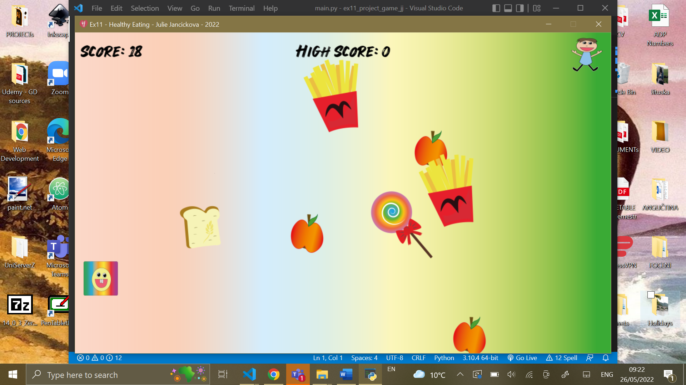

Julies's Project
Description
I developed a simple educational arcade game for children aged 5-11
where the player tries to catch healthy food and escape from catching unhealthy sweets/fries.
The player can move in all directions by using the keyboard - catching the right NPC would add a score,
and catching the wrong NPC would appear little animation of a little boy gaining weight.
The game is trying to educate players with visualizing and colorful entertainment.
The game is consider as a good practice and stimulates cognitive development as thinking (making a decision quickly),
exploring, and figuring things out.
The game ends once the little boy gets total weight and makes a sad face,
showing that eating unhealthy food could cause obesity in later stages and problems with mental health.
The player is made as a happy emoji to keep the attention of a younger audience.
The development was focused on attractive graphics, which were created in Adobe Illustrator 2022.
